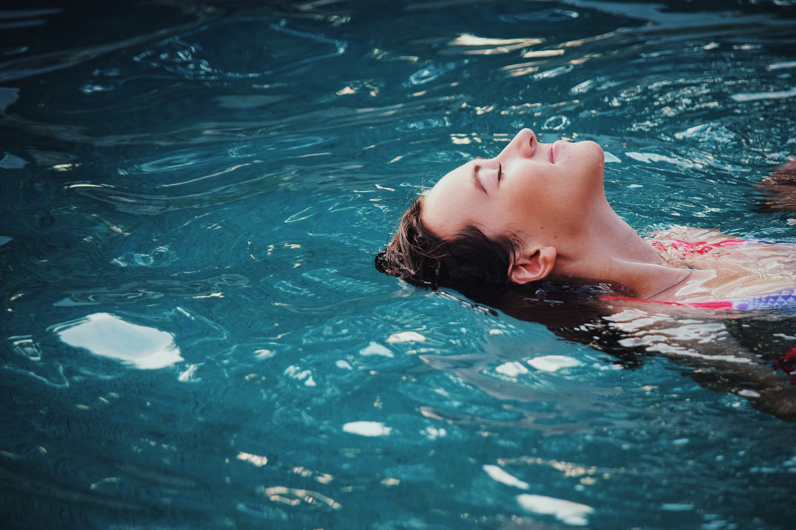

Este tipo de masajes fija su atención en descargar la tensión acumulada, se aplica de manera lenta y con una presión firme y progresiva. Cualquier persona con un mínimo de conocimientos de masaje y buen sentido común puede aplicarlo. Siendo su efecto la relajación y la disminución del tono muscular, a través de un contacto no agresivo por parte de la persona que lo aplica.
Lo más importante a la hora de realizar este tipo de masajes es actuar sobre los puntos de tensión del receptor, realizando las maniobras en las áreas de tensión (a veces llamados «nudos»), que principalmente se ubican en la espalda, músculo trapecio, erectores de la columna y musculatura masticadora. También hay que tener en cuenta, que quien realiza los masajes, este tranquilo y relajado, así podrá influir positivamente en el resultado del masaje, y lograr el objetivo deseado. Una de las formas más empleadas del masaje relajante es el masaje sensitivo.
